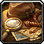
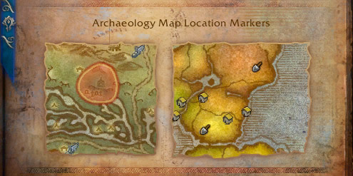
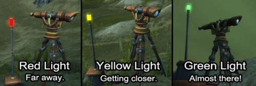

This Archaeology guide will teach you the basics of this profession and shows you the fastest way to level it up to 950.This guide is for retail WoW. If you are looking for the classic guide, visit my MoP Classic Archaeology Leveling Guide instead.
Table of contents
Midnight
Archaeology didn't get any content updates in Midnight expansion. This profession seems to be pretty much abandoned at this point, as it hasn't received any updates in four expansions.
Dig Sites
Once you learn Archaeology, you can see dig sites on your World Map. They look like little shovels.
You will find 4 dig sites in most continents, 3 in the Broken Isle, and 5 in Kul Tiras and Zandalar. These dig sites are player-specific, you don't have to worry about competition. They won't change on logout, server restart, or anything. You have to complete one to get a new dig site.
Dig sites look like this

Surveying Dig Sites
After learning Archaeology, you will find the Survey ability in your spellbook's profession tab. This ability is used for finding and digging out artifact fragments.
- Go to a dig site, and use Survey. A little tripod will spawn with a red, yellow, or green light indicating your distance from the artifact fragment.
- First, check which direction it points to and then move that way.

- If the light is red (over 70 yards) or yellow (30-70 yards), you should mount up and run for a while. Use Survey again and keep going in the direction the Survey tool points.
- When the light is green (less than 30 yards), walk in the direction the survey tool points until you see a shining shovel over your head.
- Use your survey tool to dig out the artifact fragment, but don't leave yet. You will see some kind of object on the ground that you have to loot.
You can search each dig site 6 or 9 times before it despawns and a new site spawns. (9 times at Broken Isle, Draenor, Zandalar, and Kul Tiras)
Fragments
When you discover your find, you'll get fragments specific to a particular race. Below is a list of the races you’ll be learning about in Archaeology:
| Continent | Race | Skill Required |
|---|---|---|
| Eastern Kingdoms | Fossil, Night Elf, Troll, Dwarf | 1 |
| Kalimdor | Fossil, Night Elf, Troll | 1 |
| Draenor | Draenor Clans, Ogre, Arakkoa | 1 |
| Broken Isle | Demonic, Highmountain Tauren, Highborne | 1 |
| Zandalar | Zandalari | 1 |
| Kul Tiras | Drust | 1 |
| Outland | Draenei, Orc | 300 |
| Northrend | Nerubian, Vrykul, Troll, Night Elf | 375 |
| Uldum | Tol’vir | 450 |
| Pandaria | Mogu, Pandaren, Mantid | 525 |
Artifacts
When you loot your first fragment, you will start a research project. The number of fragments required for each artifact can vary from 25 to 200. When you have enough fragments, you can click the little Solve button to complete that Artifact. If you have excess fragments, they won't go to waste. They will start a new project.
Unfortunately, you cannot control which research projects you get, it's random. So, you will have to complete the same research projects multiple times with a particular race until you get the one you wanted in the first place.
Keystones
When you loot a fragment at a dig site, you sometimes get keystones like Troll Tablet, Highborne Scroll, Dwarf Rune Stone, etc. You can use these to speed up your research a little bit.
There is a slot that appears on some of the artifacts that you can place one of these in. Not every artifact, but rare artifacts will often let you use two or three at once. The keystone will increase your fragment count by 12. (20 for keystones from Pandaria and Draenor)
Archaeology Trainers
The first rank of Archeology allows a maximum potential skill of 75, then each rank will increase your maximum potential Archeology skill. Don't forget to learn each rank of Archeology from your trainer! You have to click on "Train" multiple times!
You can learn every rank of Archeology between 1 and 700 from  Belloc Brightblade in Orgrimmar or
Belloc Brightblade in Orgrimmar or  Harrison Jones Stormwind.
Harrison Jones Stormwind.
You can learn Legion Archeology (700-800) from Dariness the Learned at Dalaran in the Broken Isle. (She also teaches every lower rank)
You can learn Battle for Azeroth Archaeology (800-950) from  Examiner Alerinda in Dazar'alor and
Examiner Alerinda in Dazar'alor and  Jane Hudson in Boralus. (They also teach every lower rank)
Jane Hudson in Boralus. (They also teach every lower rank)
Leveling Archaeology
You will get 6-9 skill points for completing each dig site and 5 for any artifact you solve (15 for rare ones).
1 - 750
Surveying dig sites at Broken Isle is the fastest way to level Archaeology to 750 because you can survey each dig site 9 times, and the dig sites are confined to one zone, so you will get to each dig site much faster. (The zone where you can find dig sites changes every two weeks)
Alternatives:
- You can level until 700 in Draenor. You will also get 9 skill points from dig sites in Draenor, but you will have to travel more between dig sites.
- You can level until 600 in Eastern Kingdoms and Kalimdor. But, you will only get 6 skill points from each dig site, and you will have to travel a lot more between dig sites, so these continents are much slower.
- You can also level to 600 in Outland (from 300), Northrend (from 375), and Pandaria (from 525) once you have high enough Archaeology skill.
750 - 950
You could do the 750-800 part at the Broken Isle, but from around 750, looting the fragments at dig sites will give skill points much less frequently, so I recommend switching to Zandalar or Kul Tiras.
And for the last 150 points, you can only gain skill points by surveying in Zandalar or Kul Tiras dig sites, and solving artifacts won't give any skill points anymore.
As you get closer to 950, you will get skill points much less frequently. The last 30-40 points will be really slow, you will sometimes have to clear multiple dig sites just to gain a single skill point.